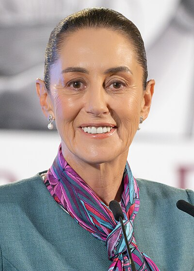

Mexican Politics is characterized by a federal republic structure, where power is divided between the national government and 32 states, each with its own constitution and governance. The capital of the nation is Mexico City. Mexico's political history is broad, featuring figures like Lázaro Cárdenas, who controlled the oil industry and implemented land reforms, and Benito Juárez, who backed liberal reforms. A multi-party system characterizes the political scene, and the president of Mexico functions as both the head of state and the head of government. The current head of State for Mexico is Claudia Sheinbaum Pardo.
Mexico's economy is a thriving blend of agriculture and industry, exhibiting the country’s rich cultural past. Being a major exporter of tequila, avocados, and tomatoes worldwide, its food is a delightful representation of its vast agricultural resources. Mexico is an industrial giant that produces commodities like electronics and cars for export, in addition to the agricultural industry. Profiting from the USMCA trade pact, the US is its main trading partner. Major cities are important economic hubs such as Mexico City which stands out as a major financial hub in Latin America, along with Guadalajara and Monterrey. As these cities grow, they attract talent and investment, strengthening the economy of the nation. Mexico's economy is expanding despite obstacles, thanks to innovation and commitment to leveraging its diverse resources.
{kind=link}